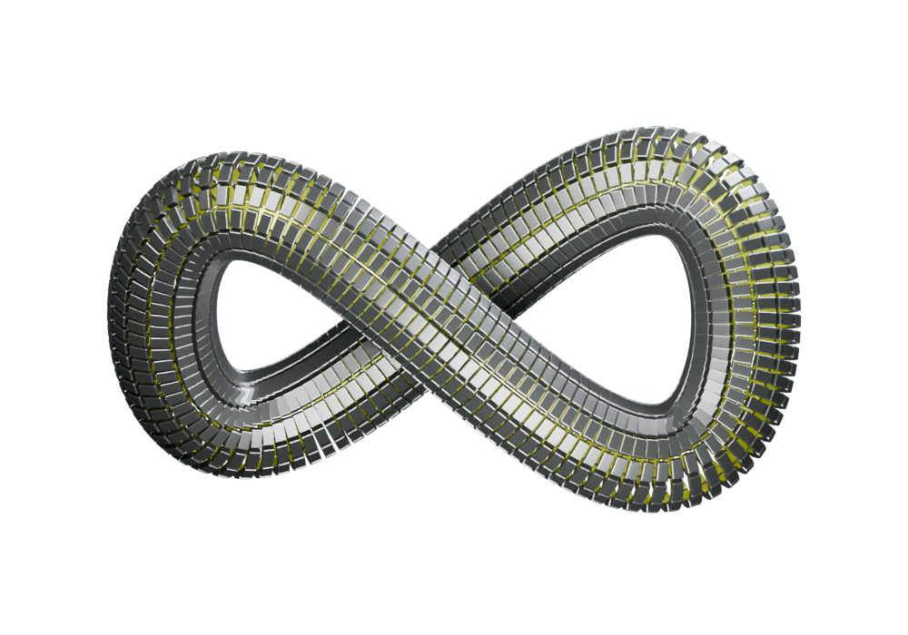
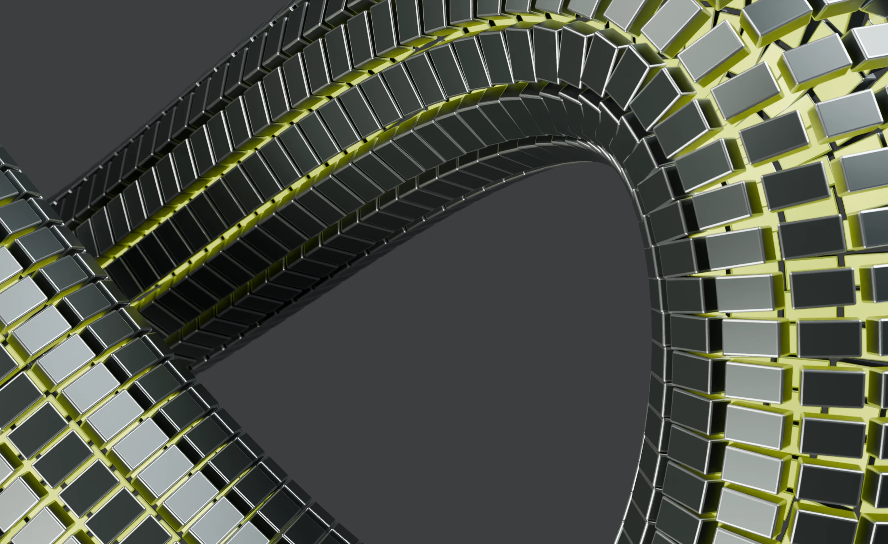

01 / Research notes
Early interviews point to one priority: answers that retain a clear link to their original source. People want to check the context behind a recommendation before deciding what to do.

03 / FIND THE CONNECTION
Follow every answer back
to its source.
ANSWER
People need to understand where an answer comes from. Make source links visible before adding more features.
Early interviews point to one priority: answers that retain a clear link to their original source. People want to check the context behind a recommendation before deciding what to do.
Make source links visible by default. Use simpler language and let people read the supporting passage. Keyboard navigation and reading contrast need to be checked before inviting testers.
Prepare three source-based tasks and invite five participants. Observe where they need more context, record the friction, and revise the prototype before the next session.

BUILT AROUND WHAT MATTERS
Start with a question. Follow the connection.
Explore the demo